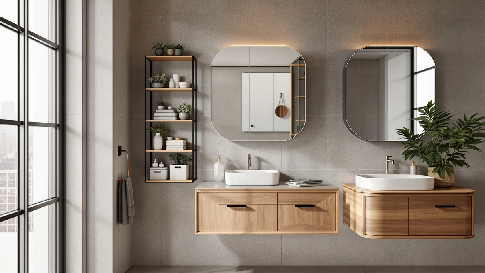

The Best Wall-mounted Bathroom Storages (2026)
Prices and picks verified as of September 2026. Independent, reader-supported reviews.


Quick Answer
If you want one wall-mounted organizer that handles the widest range of hot styling tools without eating up counter space, the FUNKYLEE Hair Tool Organizer 3 is the best wall-mounted bathroom storage pick for most people. It costs $15.99, mounts in minutes, and keeps a hair dryer, flat iron, and curling wand off the counter in a rust-resistant metal frame.
Our pick: FUNKYLEE Hair Tool Organizer 3, $15.99 Check Price on Amazon
Bottom line: our top pick is the FUNKYLEE Hair Tool Organizer at $15.99. The best budget option is the MZYIWUU 2 Pack Cabinet Door Organizer at $13.99.
Things to Know Before You Buy
- Mounting method decides how permanent the setup is. Adhesive-mounted picks like the Liuoud shower caddy and the MZYIWUU and Sinnsally cabinet organizers skip drilling entirely, which matters if you rent, while a screw-mounted rack holds more weight over the long run.
- Weight limits vary by a wide margin. The Sinnsally baskets top out at 6.6 pounds each, while a single Liuoud adhesive strip is rated to 40 pounds, so check the number before you hang anything heavier than a bottle of shampoo.
- Material affects how it holds up in a humid room. Stainless steel and powder-coated metal resist rust better than bare wire or plastic once steam becomes a daily habit.
- Hot-tool racks need heat-safe compartments. A metal ring or open wire cup lets a warm flat iron cool down without scorching the wall or warping a plastic bin.
- Measure your space first. A three-compartment rack and a five-piece caddy set take up different amounts of wall, so match the footprint of your wall-mounted bathroom storage to your bathroom before you buy.
The best wall-mounted bathroom storages solve the same problem: too many bottles, hot tools, and towels crammed onto a counter that was never built to hold them. A small bathroom loses usable space fast once a hair dryer, a straightener, a few shampoo bottles, and a stack of towels all compete for the same six square feet of counter. Moving that clutter onto the wall, whether with screws or a rated adhesive strip, frees up the counter without asking you to renovate anything.
We compared seven wall-mounted organizers built for different jobs, from hot-tool racks to cabinet-door bins to adhesive shower caddies, and the FUNKYLEE Hair Tool Organizer 3 came out as our pick for most bathrooms. It handles a hair dryer, a flat iron, and a curling wand in one compact metal frame for $15.99, and its rust-resistant wire construction is built to sit in a humid room without corroding.
Not every bathroom needs a hot-tool rack, though, so we also compared cabinet-door bins for hidden storage, a heavy-duty towel rack for a modern black-and-white bathroom, and an adhesive shower caddy set for anyone who can't drill into tile. Every pick here mounts to a wall, door, or tile surface, and we noted the mounting method, weight limit, and material for each so you know what you're committing to before you buy.
Why You Should Trust Us
Best Bathroom Storage covers one specific problem: how to free up counter and cabinet space in a bathroom that never has enough of either. We've spent months comparing wall-mounted bathroom storage, from hair-tool racks to shower caddies to cabinet-door bins, and we write up what actually holds weight and what only looks good in a product photo.
We don't run a paid testing lab and we don't invent reviews. We read the same product specs, weight ratings, and verified owner feedback you can find on Amazon, and we compare those claims against how metal, PET plastic, and adhesive mounts actually behave in a steamy bathroom.
How We Picked
We started with the basics: does it mount to a wall, door, or tile surface, and can it hold typical bathroom items without the stated weight limit becoming a problem within a few months? Every pick in this guide is rated for at least light daily use, whether that's a hair dryer or a stack of shampoo bottles.
From there we split the field by job. For hot styling tools, we compared racks with heat-safe metal compartments instead of plastic ones that could warp near a warm flat iron. For general clutter, we looked at cabinet-door bins and shower caddies that free up counter space without permanent installation. We left out anything with vague capacity claims or a mounting system that wasn't rated for the weight it's meant to carry, so every wall-mounted bathroom storage pick here does the job it's built for.
How We Compared
Comparing wall-mounted bathroom storage means comparing claims you can verify against specs and reviews, not running a lab test on adhesive strips. Three questions decide most of it: how much weight is the mount actually rated for, what material is it made from, and does the design match the item you're storing, since a hair dryer needs heat-safe compartments and a bottle of body wash doesn't.
For the hot-tool racks, we compared compartment material and heat exposure: an open wire cup or a metal ring lets a warm iron cool safely, while an enclosed plastic bin risks warping. For the adhesive-mounted caddies and cabinet organizers, we checked the manufacturer's stated weight rating against what a full caddy of glass bottles or a stack of lids would actually weigh, since adhesive failure is the most common complaint we found in owner reviews. Prices reflect what we saw when we wrote this guide; check the current price before you buy, since Amazon pricing shifts.
Our Picks

FUNKYLEE Hair Tool Organizer 3
What we like
- Three separate compartments plus a side hook keep a dryer, iron, and wand from tangling together
- Rust-resistant iron construction handles daily steam without corroding
- Compact 10.2 x 4.1 x 6.5 inch footprint fits a small bathroom wall or the back of a cabinet door
Flaws but not dealbreakers
- The compact size means less room to grow if you add more tools later
- No stated weight capacity beyond hair tools, so it's not a fit for towels or heavier bottles
| Material | Metal / wood |
| Size | 4.1 inches x 10.2 inches x 6.5 inches |
The FUNKYLEE Hair Tool Organizer 3 packs three separate compartments and a side hook into one 10.2 x 4.1 x 6.5 inch metal frame, enough to hold a hair dryer, a flat iron, and a curling wand without letting the cords tangle. The compartments sit at slightly different depths, so a shorter tool like a straightener doesn't slide around next to a bulkier dryer, and the open wire design lets a warm tool cool down without trapping heat against a wall or countertop.
Iron construction gives it an edge over the plastic organizers we compared: it resists rust in a bathroom that sees daily steam, and it holds its shape under the weight of a full-size dryer instead of sagging over time. At $15.99 it also costs less than every other hot-tool rack in this guide, which is part of why it's our pick for most people shopping for wall-mounted bathroom storage built specifically around styling tools. The tradeoff is scale: if you own more than three hot tools or want room for hairspray and brushes too, the Sonyabecca's five-way layout gives you more slots to work with.

MZYIWUU 2 Pack Cabinet Door
What we like
- Adhesive mount skips drilling, so it works in a rental without leaving holes
- Clear PET plastic keeps contents visible at a glance
- Stackable design lets you add a second bin above or below the first
Flaws but not dealbreakers
- Adhesive-only mounting means the weight limit is lower than a drilled bracket
- Best for lightweight items like toothbrushes and sponges, not larger bottles
| Material | Metal / wood |
| Size | — |
The MZYIWUU 2 Pack Cabinet Door Organizer mounts to the inside of a cabinet door with an adhesive strip, turning otherwise wasted space into a spot for toothbrushes, sponges, or small bottles. Because the bins are clear PET plastic, you can see what's inside without opening a second drawer to dig around, and the vertical design keeps items from falling every time you swing the door open.
This is the pick to reach for if you'd rather hide clutter than display it. Unlike our top pick, it doesn't compete for wall space at all, since it lives inside a cabinet you already have, which makes it one of the easier wall-mounted bathroom storage upgrades to add without changing how your bathroom looks. The BPA-free PET plastic is shatter-resistant and wipes clean easily, though it's built for lightweight essentials rather than a full set of glass bottles, so check the adhesive's rated capacity before loading it up.

Towel Rack for Rolled Towels
What we like
- Large-capacity design holds multiple rolled towels, washcloths, or even pool towels
- Rust-resistant, heat-resistant metal construction is built specifically for bathroom humidity
- Black finish gives it a modern look that works as a decor piece as much as storage
Flaws but not dealbreakers
- At $29.99 it costs more than most of the wall-mounted racks in this guide
- Its size makes it better suited to a larger bathroom wall than a tight powder room
| Material | Metal / wood |
| Size | Large |
The Roeveca Towel Rack for Rolled Towels is built around a different habit than the rest of this guide: rolling towels instead of folding them onto a shelf. Its large-capacity metal frame holds several rolled bath towels, hand towels, or washcloths at once, and the design leaves each one visible and easy to grab without unrolling the stack next to it.
Metal construction means it's rated for rust resistance and heat, so it holds up in a bathroom that runs hot and humid after every shower, and the black finish reads as a design choice rather than a purely functional add-on. At $29.99 it's one of the pricier picks here, but it's also the only wall-mounted bathroom storage option in this guide built specifically around a rolled-towel display instead of hot tools or small bottles, so the price reflects a different job.

Liuoud 5 Pack Shower Caddy
What we like
- Five pieces (three caddies, a soap holder, and a toothbrush holder) cover most of a shower's storage needs in one order
- Stainless steel with a heat-paint finish resists rust in constant water exposure
- Each adhesive strip is rated to hold up to 40 pounds
Flaws but not dealbreakers
- The pink, girly-decor styling won't fit every bathroom
- Five separate pieces means five separate adhesive mounts to place correctly the first time
| Material | Metal / wood |
| Size | Large |
The Liuoud 5 Pack Shower Caddy is the only set in this guide built specifically for inside the shower rather than the rest of the bathroom. It ships with three wall caddies in different sizes, a soap holder, and a toothbrush holder, along with adhesive strips for each one, so you can lay out an entire shower's storage in a single afternoon instead of buying pieces separately.
Stainless steel with a heat-cured paint finish is built to handle constant water exposure, and the hollow shelf design lets each caddy drain and dry faster than a solid-bottom bin would. At $19.99 for five pieces, it undercuts most single-item hot-tool racks in this guide on a per-item basis, which makes it the budget pick if what you actually need is shower storage rather than a countertop or cabinet-door fix. The adhesive is rated to 40 pounds per strip, more than enough for shampoo and conditioner bottles, but it's still adhesive, so a clean, smooth tile surface matters for it to hold.

Wall-Mounted Hair Dryer Holder Styling
What we like
- Five-way layout (three diamond-mesh nets, a basket, and an iron ring) holds more tools than any other pick here
- The basket holds makeup or skincare too, beyond just hot tools
- Two mounting options, adhesive or screws, let you choose based on your wall
Flaws but not dealbreakers
- At $29.99 it costs nearly double our top pick for a similar core function
- The larger footprint needs more wall space than the compact FUNKYLEE
| Material | Metal / wood |
| Size | 1 Basket & 3 Shelf |
The Sonyabecca Wall-Mounted Hair Dryer Holder Styling is built for someone with more hair tools than a basic three-slot rack can hold. Three diamond-shaped mesh nets separate irons, wands, and hairspray, a basket at the bottom handles makeup or lotion bottles, and an iron ring gives a hair dryer its own dedicated spot instead of competing for space with everything else.
Because it offers both non-marking adhesive strips and screws, it works whether you're renting or want a permanent mount, though the instructions note the adhesive needs 48 hours before you hang anything on it. At $29.99 it's priced closer to the towel rack than the hot-tool racks in this guide, and it takes up more wall space than our top pick, so it's the better choice only if you actually have enough tools and accessories to fill five compartments instead of three.

Ronjnndc Rustic Hair Dryer Holder
What we like
- Six sections split between stainless steel cups for hot tools and wood compartments for lotion, makeup, or accessories
- Rustic wood-and-metal styling stands out from the plain wire racks in this guide
- Bottom metal holder adds a spot for earrings, headbands, or a hand towel
Flaws but not dealbreakers
- At $27.99 it's priced closer to the mid-tier picks than to the budget options
- Open wood compartments show clutter more than an enclosed bin would
| Material | Metal / wood |
| Size | — |
The Ronjnndc Rustic Hair Dryer Holder splits its six sections between two stainless steel cups for hot tools and open wood compartments for everything else, makeup brushes, lotion, cologne, or hair product. The stainless cups are built to hold a warm dryer or iron without transferring heat to the wall behind it, while the wood sections give the rack a look closer to bathroom decor than a purely functional storage rack.
It's the pick to choose if the wire-frame look of our top pick doesn't fit your bathroom's style. The tradeoff is price and openness: at $27.99 it costs more than the FUNKYLEE for a similar core function, and because the wood compartments are open rather than enclosed, whatever you store in them stays visible rather than tucked away. If style matters as much as function, it earns its spot; if you need somewhere to put a hair dryer and nothing more, the cheaper wire racks in this guide do the same job for less.

Sinnsally 2 Pack Cabinet Door
What we like
- No-drill adhesive install leaves no marks on doors, walls, or cabinets
- Metal construction feels more durable than the clear-plastic MZYIWUU alternative
- Two basket sizes, large and medium, fit different cabinet doors in the same 2-pack
Flaws but not dealbreakers
- Maximum rated weight is 6.6 pounds per basket, less than most adhesive shower caddies here
- Metal doesn't let you see contents at a glance the way a clear plastic bin does
| Material | Metal / wood |
| Size | Large |
The Sinnsally 2 Pack Cabinet Door Organizer covers the same job as the MZYIWUU runner-up, hidden storage inside a cabinet door, but swaps clear plastic for metal and comes in two basket sizes in one pack. Each basket mounts with an adhesive strip, so there's no drilling, and the metal construction gives it a sturdier feel than a plastic bin, even though it's rated for a lower maximum weight of 6.6 pounds.
At $14.39 it undercuts the MZYIWUU slightly while trading visibility for durability, since you can't see through metal the way you can through clear PET plastic. It's a reasonable pick if you're organizing a cabinet door you open often enough to remember what's inside, or if you'd simply rather not store bathroom items in plastic. Like every adhesive-mounted pick in this guide, it depends on a clean, smooth surface to hold, so wipe down the door before you install it.
Quick Comparison
| Product | Material | Price | Rating | Best for | Get it |
|---|---|---|---|---|---|
| FUNKYLEE Hair Tool Organizer 3 | Metal / wood | $15.99 | 4 | Most bathrooms, hot tools | View on Amazon → |
| MZYIWUU 2 Pack Cabinet Door | Metal / wood | $13.99 | 4 | Hidden cabinet-door storage | View on Amazon → |
| Towel Rack for Rolled Towels | Metal / wood | $29.99 | 4 | Rolled towel storage | View on Amazon → |
| Liuoud 5 Pack Shower Caddy | Metal / wood | $19.99 | 4 | Full shower organization | View on Amazon → |
| Wall-Mounted Hair Dryer Holder Styling | Metal / wood | $29.99 | 4 | 5+ hot tools and accessories | View on Amazon → |
| Ronjnndc Rustic Hair Dryer Holder | Metal / wood | $27.99 | 4 | Decor-forward hot-tool storage | View on Amazon → |
| Sinnsally 2 Pack Cabinet Door | Metal / wood | $14.39 | 4 | Budget cabinet-door storage | View on Amazon → |
What's the best way to mount wall storage without drilling into tile?
Look for a pick rated with a weight-specific adhesive strip, like the Liuoud shower caddy or the Sinnsally and MZYIWUU cabinet-door organizers.
Is it better to screw a bathroom organizer into the wall or use adhesive?
It depends on how permanent you want it and how much weight it needs to hold.
The Competition
Every wall-mounted bathroom storage pick in this guide earned its spot, but a few compete directly with a cheaper or better-suited alternative already on this list.
The Sonyabecca Wall-Mounted Hair Dryer Holder Styling ($29.99) packs in more compartments than our top pick, but it costs nearly double for hardware most single-person bathrooms won't fill. Unless you own more than three hot tools, the FUNKYLEE handles the same job for less.
The Ronjnndc Rustic Hair Dryer Holder ($27.99) wins on style with its wood-and-steel build, but its open compartments hold less than an enclosed rack and it costs $12 more than our top pick. Choose it for the look, not for extra capacity.
The Sinnsally 2 Pack Cabinet Door Organizer ($14.39) and the MZYIWUU 2 Pack Cabinet Door Organizer ($13.99) solve the same hidden-storage problem in different materials, metal versus clear plastic. We ranked the MZYIWUU as the runner-up because its transparent bins make it easier to find what you're looking for, but the Sinnsally is the better pick if you prefer a sturdier metal build over visibility.
For most bathrooms, the FUNKYLEE Hair Tool Organizer 3 remains the best wall-mounted bathroom storage pick on this list. It costs the least, mounts in minutes, and handles the hot tools most people actually own.
Frequently Asked Questions
What's the best way to mount wall storage without drilling into tile?
Look for a pick rated with a weight-specific adhesive strip, like the Liuoud shower caddy or the Sinnsally and MZYIWUU cabinet-door organizers. Wipe the surface with rubbing alcohol first so the adhesive bonds fully, and stick to the manufacturer's weight rating, since overloading an adhesive mount is the most common reason wall-mounted bathroom storage falls off a wall.
Is it better to screw a bathroom organizer into the wall or use adhesive?
It depends on how permanent you want it and how much weight it needs to hold. Adhesive mounts skip drilling and work well for lightweight items like toothbrushes, sponges, or shower bottles under 40 pounds, which covers most of the picks in this guide. A screw-mounted rack holds more weight over a longer period and makes more sense if you own the property or plan to keep it in place for years.
Can I store a hot hair dryer or flat iron safely on a wall-mounted rack?
Yes, as long as the rack uses heat-safe compartments, an open wire cup, a metal ring, or a diamond-mesh net, rather than an enclosed plastic bin. Every hot-tool organizer in this guide is built with metal compartments for that reason, since plastic can warp or discolor against a warm iron.
How much weight can an adhesive shower caddy actually hold?
It varies by product, so check the listed rating rather than assuming. The Liuoud caddy set, for example, lists each adhesive strip at up to 40 pounds, which comfortably covers a full lineup of shampoo, conditioner, and body wash bottles. Overloading it, or mounting it on a textured or uneven tile surface, is the most common reason an adhesive caddy fails early.
What's the difference between a cabinet-door organizer and a wall-mounted rack?
A cabinet-door organizer, like the MZYIWUU or Sinnsally, mounts to the inside of a door you already have, so it hides clutter without adding anything visible to your bathroom. A wall-mounted rack, like the FUNKYLEE or Sonyabecca hair-tool holders, mounts to open wall space and stays visible, which works better for tools you reach for every day.